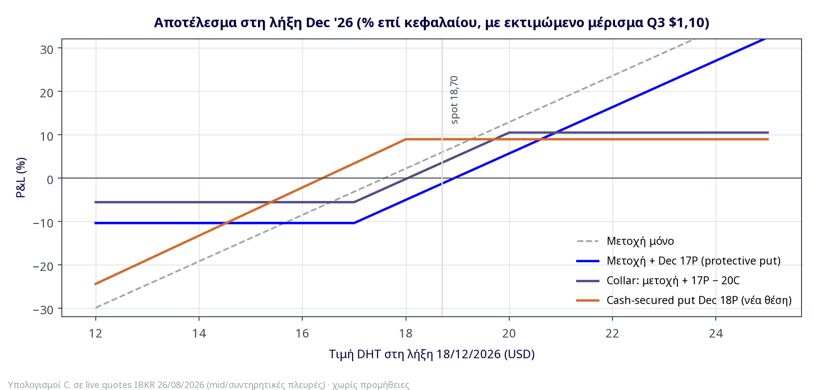

Πίνακας 1 — Volatility dashboard (live, 26/08/2026)
| Μέγεθος | Τιμή | Ανάγνωση |
|---|---|---|
| IV underlying (annualized) IBKR | 39,9% | Έπεσε από 40,6% χθες — φθηνότερη κι άλλο |
| HV 30 ημερών (realized) | 40,5% | IV − HV ≈ −0,6 μ.β.: μηδενικό/αρνητικό variance premium |
| IV percentile 13 εβδ. / 26 εβδ. / 52 εβδ. | 6,3% / 3,1% / 45,4% | Σχεδόν το φθηνότερο IV του εξαμήνου· μεσαίο σε ετήσια βάση (το H1 ήταν πολεμικό) |
| Όγκος options (μ.ο. ημέρας) | 25.441 calls / 1.603 puts | Ροή 15,9:1 υπέρ calls — το πλήθος αγοράζει upside, κανείς δεν αγοράζει προστασία |
| Term structure ATM | ~40% Sep → ~42% Dec | Ήπια ανοδική — το Q4 event risk τιμολογείται μετρημένα |
| Skew | Call-wing smile | Sep 21C 44% έναντι ATM 40% — τα OTM calls πιο ακριβά από τα OTM puts: η προστασία είναι το φθηνό πόδι |
Πίνακας 2 — Κρίσιμα strikes (live quotes 26/08/2026, spot $18,70)
| Συμβόλαιο | Bid | Ask | Mid | IV | OI | Όγκος | Delta* |
|---|---|---|---|---|---|---|---|
| Sep 18 '26 — 17 Put | 0,15 | 0,25 | 0,20 | 43,4% | 1.129 | 42 | −0,17 |
| Sep 18 '26 — 18 Put | 0,40 | 0,50 | 0,45 | 41,2% | 1.321 | 321 | −0,33 |
| Sep 18 '26 — 19 Call | 0,55 | 0,70 | 0,625 | 39,2% | 2.257 | 371 | +0,44 |
| Sep 18 '26 — 20 Call | 0,25 | 0,30 | 0,275 | 39,8% | 11.938 | 283 | +0,27 |
| Sep 18 '26 — 21 Call | 0,15 | 0,20 | 0,175 | 44,2% | 15.327 | 163 | +0,17 |
| Dec 18 '26 — 15 Put | 0,50 | 0,70 | 0,60 | 46,0% | 282 | 0 | −0,21 |
| Dec 18 '26 — 16 Put | 0,80 | 0,95 | 0,875 | 44,5% | 44 | 13 | −0,28 |
| Dec 18 '26 — 17 Put | 1,15 | 1,35 | 1,25 | 43,8% | 104 | 0 | −0,37 |
| Dec 18 '26 — 18 Put | 1,60 | 1,80 | 1,70 | 42,3% | 521 | 66 | −0,46 |
| Dec 18 '26 — 19 Put | 2,05 | 2,65 | 2,35 | 41,2% | 1.916 | 0 | −0,54 |
| Dec 18 '26 — 19 Call | 1,25 | 1,55 | 1,40 | 41,3% | 109 | 0 | +0,44 |
| Dec 18 '26 — 20 Call | 0,90 | 1,10 | 1,00 | 42,1% | 479 | 3 | +0,35 |
| Dec 18 '26 — 21 Call | 0,65 | 0,85 | 0,75 | 41,8% | 101 | 0 | +0,28 |
| Dec 18 '26 — 22 Call | 0,45 | 0,65 | 0,55 | 43,1% | 93 | 0 | +0,22 |
| Jan 15 '27 — 17 Put | 1,30 | 1,50 | 1,40 | 43,1% | 310 | 9 | −0,37 |
| Jan 15 '27 — 18 Put | 1,80 | 1,95 | 1,875 | 42,2% | 53 | 0 | −0,46 |
| Jan 15 '27 — 20 Call | 1,00 | 1,25 | 1,125 | 41,5% | 6.216 | 10 | +0,38 |
| Jan 15 '27 — 22 Call | 0,55 | 0,75 | 0,65 | 43,1% | 3.086 | 0 | +0,25 |
Πηγή: IBKR live snapshots 26/08/2026 IBKR. *Delta: υπολογισμός C. (Black-76 σε forward καθαρό από εκτιμώμενο μέρισμα $1,10). Ρευστότητα: spreads 8–15% του mid στα Dec strikes — εργάσιμα με limit στο mid και υπομονή, ποτέ market orders· τα bid/ask sizes (1.000+ συμβόλαια) δείχνουν επαρκές θεσμικό βάθος. Max pain σχόλιο: το Sep OI συγκεντρώνεται στα 20C/21C (27,3 χιλ. συμβόλαια) έναντι ~2,5 χιλ. σε puts — δομική «έλξη» προς τη ζώνη 19–20 στη λήξη Sep, και ταυτόχρονα ένδειξη ότι το retail έχει ήδη πληρώσει το upside.
Setup (ανά 100 μετοχές): Αγορά 1× DHT Dec 18 '26 17 Put @ ~1,35 (ask) + Πώληση 1× Dec 18 '26 20 Call @ ~0,90 (bid) → καθαρό κόστος ~$0,45 (2,4% του spot· με limit στο mid: ~$0,25).
Μέγιστη ζημιά ως τη λήξη: −$1,05/μτχ ≈ −5,6% (πτώση ως το 17 + κόστος − μέρισμα ~1,10) — έναντι απεριόριστης της γυμνής μετοχής (το «peace shock» σενάριο προς NAV $15–16 καλύπτεται πλήρως).
Μέγιστο κέρδος: +$1,95/μτχ ≈ +10,4% στα ≥$20 (κεφαλαιακό +μέρισμα −κόστος).
Νεκρό σημείο: ~$18,05 στη λήξη (με το μέρισμα). Greeks θέσης (μετοχή+collar): delta ~+0,28, vega ~ουδέτερο, theta ελαφρώς αρνητικό.
Γιατί αυτή: Το E1 λέει «κράτα το μέρισμα, φοβήσου την ειρήνευση»· το skew λέει «τα puts είναι το φθηνό πόδι, τα calls το ακριβό» — ο collar αγοράζει το φθηνό και πουλά το ακριβό. Κόβεις το tail risk του Ορμούζ ουσιαστικά τζάμπα σε όρους carry (το αναμενόμενο μέρισμα υπερκαλύπτει το κόστος), θυσιάζοντας το upside πάνω από $20 — αποδεκτό όταν το consensus PT είναι $19,3–20,5 και το δικό μας stance είναι HOLD.
Προσοχή: αν η μετοχή ξεπεράσει το ~$20,5 πριν το ex-div Νοεμβρίου, το short 20C μπαίνει σε ζώνη πρόωρης άσκησης (θα «χάσεις» τη μετοχή στο 20 + κρατάς premium — αποδεκτό οικονομικά, αλλά φορολογικά/λειτουργικά θέλει επίγνωση). Roll trigger: μετοχή >$20 πριν τα Q3 → roll το call σε Jan 22C (~χρεωστικό 0,45) για να ανοίξει το cap.
Πότε προτιμάται από τον collar: αν πιστεύεις ότι το Q3/Q4 μπορεί να φέρει νέο ράλι άνω των $20–21 (κλιμάκωση Ορμούζ) και δεν θέλεις οροφή. Κόστος 7,2% του spot για 114 ημέρες — ακριβό απόλυτα, αλλά: καλύπτεται ~κατά 80% από το αναμενόμενο μέρισμα, αγοράζεται σε IV 26εβδ χαμηλό, και καλύπτει τη λήξη-γεγονός. Μέγιστη ζημιά −10,4% (με μέρισμα)· breakeven ~$18,95. Φθηνότερη παραλλαγή: put spread Dec 17P/15P (αγορά 17P 1,35 − πώληση 15P 0,50 = 0,85): καλύπτει τη ζώνη 17→15 (το «peace dip» προς NAV) με 37% μικρότερο κόστος, αφήνει ακάλυπτο μόνο το ακραίο σενάριο <$15.
Το E1 όρισε ζώνη αγοράς $16,5–17,5. Αντί για limit order, πληρώσου για να περιμένεις:
Πώληση Dec 18 '26 18 Put @ $1,60 (bid): απόδοση επί δεσμευμένου κεφαλαίου 8,9% σε 114 ημέρες ≈ 28% ετησιοποιημένα· breakeven/τιμή κτήσης $16,40 (−12% από spot, μέσα στη ζώνη-στόχο). Delta −0,46 ≈ 54% πιθανότητα να λήξει άπρακτο.
Συντηρητικότερη: Πώληση Dec 17 Put @ $1,15: 6,8%/114ημ ≈ 22% ετησιοποιημένα, κτήση $15,85 (−15%, ουσιαστικά στη ζώνη NAV).
Τα δύο αποτελέσματα είναι αμφότερα επιθυμητά: ή κρατάς premium με ~22–28% ετησιοποιημένη απόδοση, ή αγοράζεις την DHT στη ζώνη που ούτως ή άλλως ήθελες, με το premium ως έκπτωση. Κόστος ευκαιρίας: δεν εισπράττεις το μέρισμα Q3 όσο περιμένεις, και σε κατάρρευση (<$14) αγοράζεις «ακριβά» έναντι της αγοράς — γι' αυτό μέγεθος θέσης = το κεφάλαιο που πραγματικά προόριζες για αγορά DHT, ποτέ παραπάνω. Cash-secured πάντα (18 × 100 = $1.800/συμβόλαιο δεσμευμένα), όχι margin.
Sep 20C @ $0,25: +1,3% σε 23 ημέρες (~21% ετησ.), cap +7,0% στα $20, λήγει πριν από όλα τα events — «καθαρό» premium χωρίς earnings risk. Dec 21C @ $0,65: +3,5% (~11% ετησ.) + μέρισμα + περιθώριο +12,3% ως το cap — αλλά κουβαλά τον κίνδυνο πρόωρης άσκησης προ ex-div και κόβει το call-wing που η ροή δείχνει περιζήτητο. Προτίμηση C.: αν θες premium, Sep 20C και επανεκτίμηση μετά τη λήξη· όχι συστηματικό call-selling πάνω σε χαρτί με διωνυμικό ανοδικό tail.
Το «καθαρό» παιχνίδι στη διωνυμικότητα του Ορμούζ χωρίς κατεύθυνση: αγορά Dec 16P (0,95) + Dec 21C (0,85) = $1,80 (9,6% του spot). Νεκρά σημεία $14,20 / $22,80 — χρειάζεται κίνηση ±20%+ ως τη λήξη (1σ στις 114 ημέρες ≈ ±22% με HV 40%). Δεν είναι φθηνό «λαχείο» — είναι δίκαια τιμολογημένο — αλλά με IV στο 3,1ο percentile 26 εβδομάδων, αγοράζεις vega στο φθηνότερο σημείο του εξαμήνου μπροστά από earnings + ex-div + γεωπολιτικό δίλημμα 60 ημερών. Exit plan: κλείσιμο στο πρώτο vol spike (στόχος +40–60% στο πακέτο), όχι διακράτηση ως τη λήξη όπου το theta κερδίζει. Μέγιστη ζημιά: όλο το premium. Μόνο για το κερδοσκοπικό βιβλίο, ≤1–2% χαρτοφυλακίου.
Διάγραμμα 1 — Προφίλ αποτελέσματος στη λήξη Dec '26

Υπολογισμοί C. σε live quotes (συντηρητικές πλευρές bid/ask), με εκτιμώμενο μέρισμα Q3 $1,10. Αν το μέρισμα βγει $0,85 (options-implied), όλες οι καμπύλες μετοχής μετατοπίζονται −1,3% — τα συμπεράσματα δεν αλλάζουν.
Πίνακας 3 — P&L ανά σενάριο στη λήξη 18/12/2026 ($/μετοχή, με μέρισμα $1,10)
| Τιμή DHT στη λήξη | $14 (κατάρρευση) | $16 (peace dip) | $17 | $18,70 (αμετάβλητη) | $20 | $22 (νέο ράλι) |
|---|---|---|---|---|---|---|
| Μετοχή μόνο | −3,60 (−19%) | −1,60 (−9%) | −0,60 | +1,10 (+6%) | +2,40 (+13%) | +4,40 (+24%) |
| Μετοχή + 17P | −1,95 (−10%) | −1,95 (−10%) | −1,95 | −0,25 (−1%) | +1,05 (+6%) | +3,05 (+16%) |
| Collar 17P/20C | −1,05 (−6%) | −1,05 (−6%) | −1,05 | +0,65 (+3%) | +1,95 (+10%) | +1,95 (+10%) |
| CSP 18P (νέο κεφάλαιο, επί $18 cash) | −2,40 (−13%) | −0,40 (−2%) | +0,60 | +1,60 (+9%) | +1,60 (+9%) | +1,60 (+9%) |
| Covered call 21C | −2,95 (−16%) | −0,95 (−5%) | +0,05 | +1,75 (+9%) | +3,05 (+16%) | +4,05 (+22%) |
| Strangle 16P/21C (επί premium 1,80) | +0,20 (+11%) | −1,80 (−100%) | −1,80 | −1,80 (−100%) | −0,80 (−44%) | −0,80→+0,20* |
*Strangle στα $22: −0,80· στα $24: +1,20. Ποσοστά επί spot $18,70 (CSP: επί δεσμευμένου κεφαλαίου· strangle: επί premium). Χωρίς προμήθειες. C.
Πίνακας 4 — Διαχείριση θέσης
| Δομή | Είσοδος | Trigger προσαρμογής | Έξοδος |
|---|---|---|---|
| Collar 17P/20C | Τώρα (limit στο mid: ~0,25 net) — η σημερινή −2,45% βοηθά το call leg λιγότερο· εναλλακτικά σε bounce >$19 | Μετοχή >$20 προ Q3 → roll call σε Jan 22C· μετοχή <$16,5 → πούλησε το 17P με κέρδος, κράτα short call | Λήξη Dec ή οριστική λύση Ορμούζ (κλείσιμο put, επανεκτίμηση όλης της θέσης) |
| Protective put / put spread | Τώρα — IV 26εβδ. χαμηλό δεν κρατάει για πάντα | IV spike >55% → πώληση μέρους της προστασίας με κέρδος vega | Μετά τα Q3 + ex-div, αξιολόγηση αν το 2027 χρειάζεται νέα κάλυψη (Apr '27) |
| CSP 18P/17P | Τώρα ή κλιμακωτά (½ τώρα, ½ σε bounce που ανεβάζει τα put premiums) | Μετοχή <$16 → ετοιμάσου για παραλαβή μετοχών (ο σκοπός της δομής)· roll down & out μόνο αν άλλαξε η θεμελιώδης εικόνα | Λήξη· ή κλείσιμο στο 70–80% του premium αν έρθει νωρίς |
| Strangle | Μόνο σε ημέρες χαμηλού IV (όπως σήμερα) | +40–60% στο πακέτο → κλείσιμο· −50% → κλείσιμο (πειθαρχία) | Το αργότερο 2 εβδομάδες προ λήξης (theta) |
Πηγές: Interactive Brokers live option chain & snapshots 26/08/2026 (bid/ask, OI, IV, ροή) [VERIFIED]· υπολογισμοί C. (Black-76, forward καθαρό από εκτιμώμενο μέρισμα· δηλωμένες παραδοχές r=4%, div Q3 $1,10 est / $0,85–0,90 implied). Βασίζεται στα συμπεράσματα των DHT Deep-Dive E1 και E7 (26/08/2026).
Η ανάλυση αυτή έχει αποκλειστικά ενημερωτικό χαρακτήρα και δεν αποτελεί επενδυτική σύσταση κατά την έννοια του Ν. 4514/2018 (MiFID II) ούτε προτροπή για κατάρτιση συναλλαγών. Οι επενδύσεις σε κινητές αξίες και παράγωγα ενέχουν κίνδυνο απώλειας κεφαλαίου. Merit Securities SA — Μέλος του Χρηματιστηρίου Αθηνών, εποπτευόμενη από την Επιτροπή Κεφαλαιαγοράς.